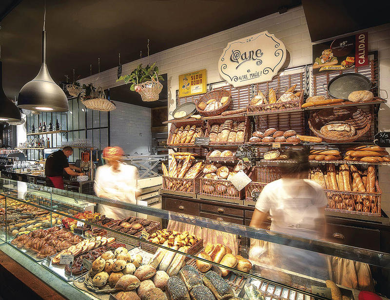

Panaderia

Panaderia Ogietxe
La pasión, el esfuerzo y la dedicación todos los días del año al oficio es una de las claves más importantes para explicar el exito del funcionamiento de esta panadería-pastelería. El respeto a la profesión y las ganas de hacerlo cada día mejor tanto en el pan, en bollería como en la pastelería es lo que empuja cada día al personal de Ogietxe a trabajar con entusiasmo e ilusión.